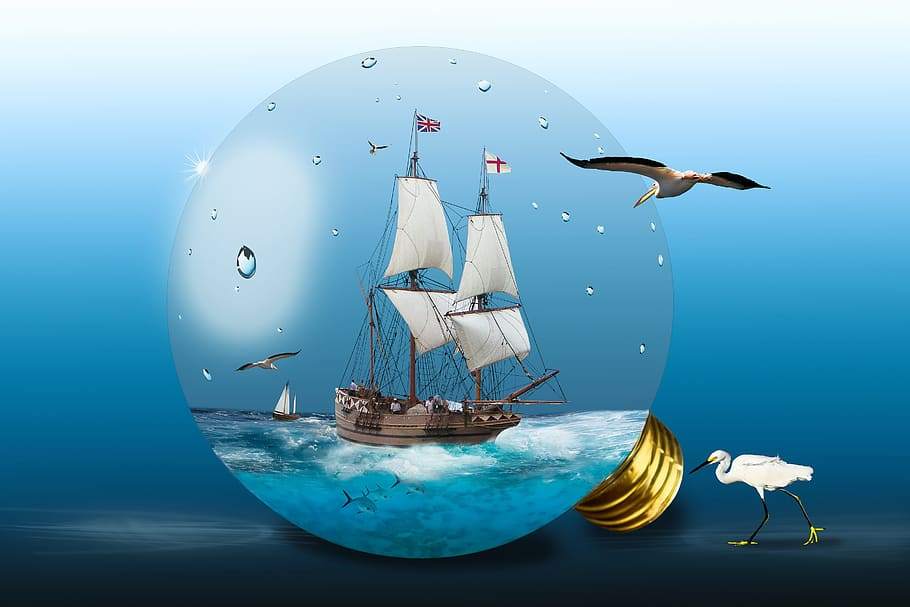

Bhvesh Marwaha C0808553
MAD3144S22LABTEST1
Rabbit test

Rabbits, also known as bunnies or bunny rabbits, are small mammals in the family Leporidae (which also contains the hares) of the order Lagomorpha (which also contains the pikas). Oryctolagus cuniculus includes the European rabbit species and its descendants, the world's 305 breeds[1] of domestic rabbit. Sylvilagus includes 13 wild rabbit species, among them the seven types of cottontail. The European rabbit, which has been introduced on every continent except Antarctica, is familiar throughout the world as a wild prey animal and as a domesticated form of livestock and pet. With its widespread effect on ecologies and cultures, the rabbit is, in many areas of the world, a part of daily life—as food, clothing, a companion, and a source of artistic inspiration.
Rabbit test 1
Rabbits, also known as bunnies or bunny rabbits, are small mammals in the family Leporidae (which also contains the hares) of the order Lagomorpha (which also contains the pikas). Oryctolagus cuniculus includes the European rabbit species and its descendants, the world's 305 breeds[1] of domestic rabbit. Sylvilagus includes 13 wild rabbit species, among them the seven types of cottontail. The European rabbit, which has been introduced on every continent except Antarctica, is familiar throughout the world as a wild prey animal and as a domesticated form of livestock and pet. With its widespread effect on ecologies and cultures, the rabbit is, in many areas of the world, a part of daily life—as food, clothing, a companion, and a source of artistic inspiration.
Rabbit test 2
Rabbits, also known as bunnies or bunny rabbits, are small mammals in the family Leporidae (which also contains the hares) of the order Lagomorpha (which also contains the pikas). Oryctolagus cuniculus includes the European rabbit species and its descendants, the world's 305 breeds[1] of domestic rabbit. Sylvilagus includes 13 wild rabbit species, among them the seven types of cottontail. The European rabbit, which has been introduced on every continent except Antarctica, is familiar throughout the world as a wild prey animal and as a domesticated form of livestock and pet. With its widespread effect on ecologies and cultures, the rabbit is, in many areas of the world, a part of daily life—as food, clothing, a companion, and a source of artistic inspiration.